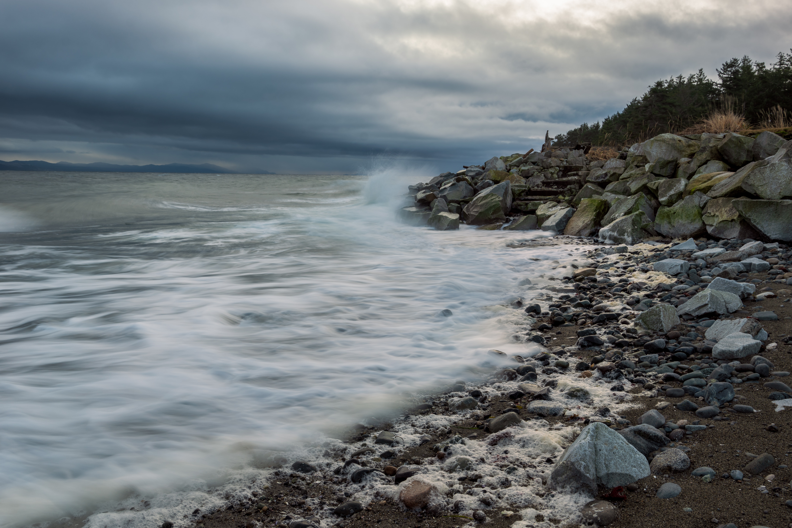

Meet Camille
I was born and raised on Vancouver Island and don’t intend on leaving this beautiful coast anytime soon. Although I have a diploma in photojournalism, I like to believe that my "eye" comes from my mom pointing out beautiful moments throughout my childhood.
I like things with stories, be it an heirloom ring passed down through generations, a special stone found on a beach, or a tall cedar that has weathered countless storms.
See WorkMission Statement
When I'm not busy capturing my clients’ stories, you can usually find me wandering with a camera in hand. One of my favourite parts of exploring new places is not knowing what I’ll find along the way. Some of my favourite photos ever captured came from spontaneous moments.I’m always drawn to the little things and am constantly seeking out these kinds of details — a field full of flowers, the perfect little cabin tucked away in the mountains or the way the clouds hug the trees.
I love that everyone has the ability to see the world through photography in such different ways and how it allows you to capture a fading moment into something that will last forever. I strive to create images that will stand the test of time and will be forever treasured many decades from now.

The Area
Vancouver Island is known for its beautiful, rugged landscapes as well as being home to hundreds of animal species such as whales, porpoises and wild salmon.
On the island you can find endless amounts of scenic views, hiking trails, and access to the ocean, rivers and lakes. It is a sanctuary for storm watching, camping and exploring.
 Book Now